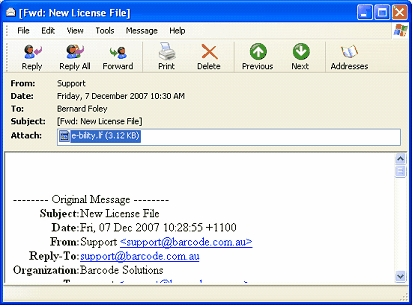
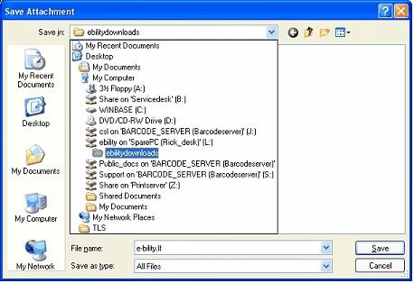

We may at times send email with files for your store. These may be new license files, reports, database files etc. When these are sent in an email, the email downloads to your machine and displays in Outlook or Thunderbird. To save the file, follow these steps.
Open the email by double clicking on it in your email manager (Outlook) to display the email.

Right click on the attachment file (attached file highlighted in blue above), select the option Save As.

Navigate to the location in which you wish to save it. In this case we will save it to our L:\e-Bilitydownloads\ folder (as always). You could save it to Documents or Desktop if you wish (but other users will not be able to access the files if you do).
Once you find the location, click the Save button.